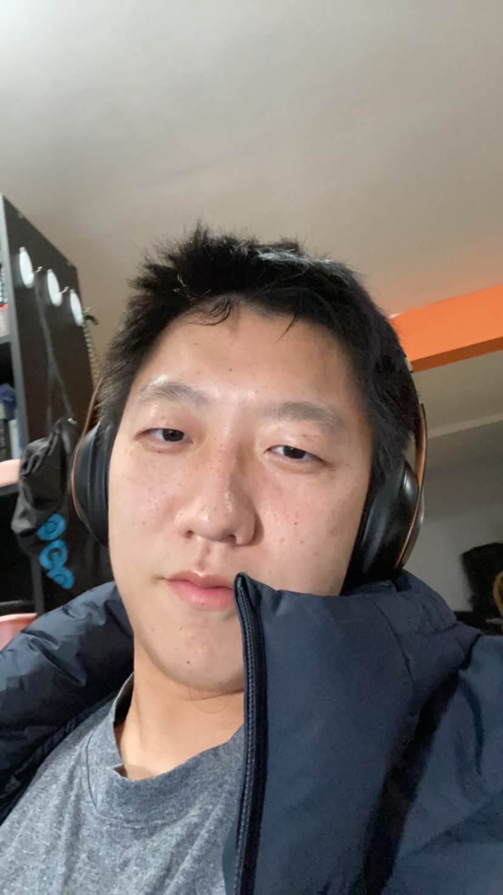

Self-Introduction
hey, my name is Ziyang Xuan. I was born in Suqian, Jiangsu in 2001. My high school is at Siyang Middle School in Jiangsu Province, and now I am an undergraduate at Stony Brook University. My major is mathematics and psychology, and I like playing basketball.
hey，我是宣子扬，2001年，在江苏宿迁出生，高中在江苏省泗阳中学就读，现在在石溪大学读本科，我的专业是数学和心理，喜欢打打篮球。
Current Life
2022.9.5
Please! Find a part-time job on-campus!!!!
1. Learning CS61A；学习CS61A
2. Stony Brook Course: MAT311;EST201;AMS475;PSY250;PHI108